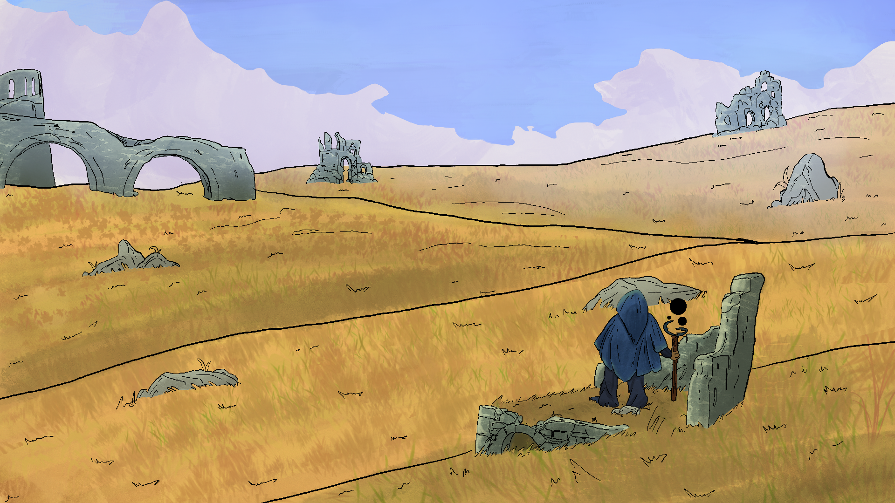
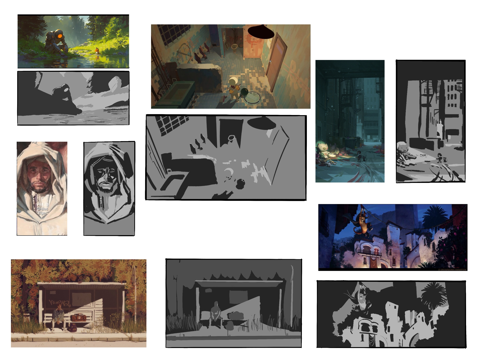
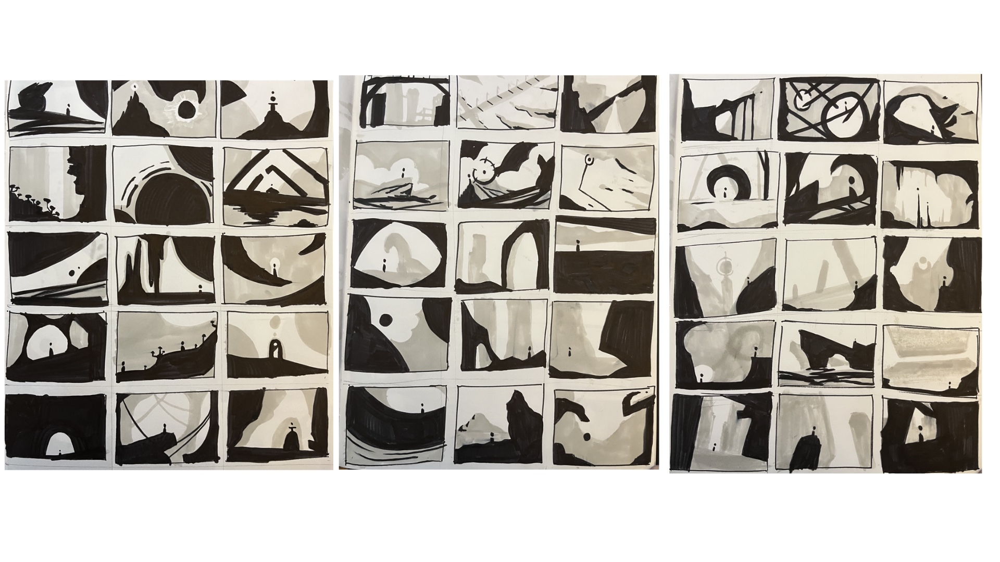
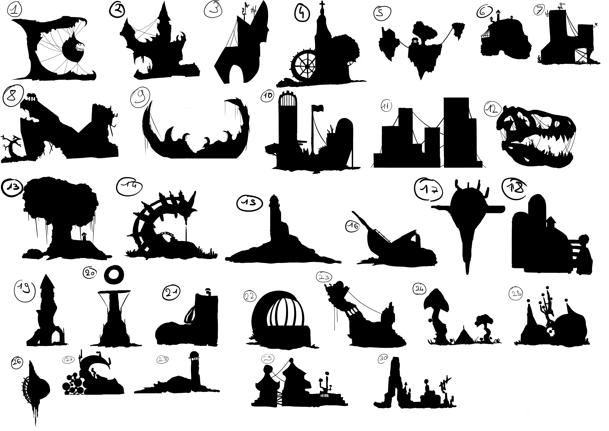
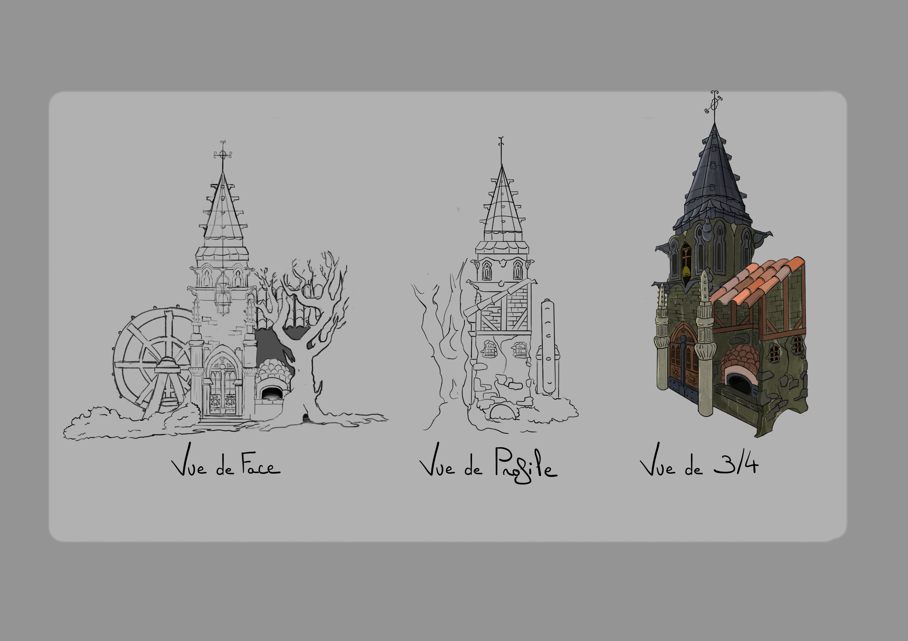

.jpeg)
Atelier dessins
10h-12hVenez apprendre les bases de l'animation !
20 membres


“L'art prend vie, l'émotion reste”
M.Dehewsky
Dedal des couleurs, l'animation comme œuvre d'art
Au cœur de Paris, au 10 rue de la République, Dedal des couleurs ouvre ses portes à un art encore trop peu exposé : l'animation. Fondée par Paul Dechewsky, passionné d'art depuis plus de trente ans, la galerie présente le travail de Noham Guimbault, qui donne vie à ses dessins. Illustrations, images clés, planches et extraits de films : chaque œuvre dévoile les coulisses d'une histoire en mouvement.
Que vous soyez collectionneur, curieux, étudiant ou professionnel, Dedal des couleurs vous invite à découvrir, acquérir et partager un art qui prend vie.





Noham Guimbault, l'art de faire vivre les images
Formé à l'animation, Noham Guimbault imagine, crée et anime ses propres idées. Ses personnages, aux couleurs vives et aux traits expressifs, donnent vie à des sujets qui l'inspirent et le touchent.
Nourri par le cinéma d'animation, il raconte des histoires simples qui touchent par leur sincérité.
À travers l'animation, Noham cherche à transmettre des messages. Vous pourrez le découvrir notamment avec son projet collaboratif Red Pill.
La galerie présente aujourd'hui une sélection de ses images clés, de ses planches de recherche et de ses projets en cours.
+ d'infos


Collectionner des oeuvres d'art

Exposer de jeunes artistes

Proposer un accès à l'Art pour tous
Venez apprendre les bases de l'animation !
20 membres
Venez regarder nos animations !
40 membres
Venez créer votre histoire !
20 membres📞 01.45.62.34.56
✉️ dedal_des_couleurs@gmail.com
📍 10 rue de la république 75000 Paris
 dedal_des_couleurs
dedal_des_couleurs